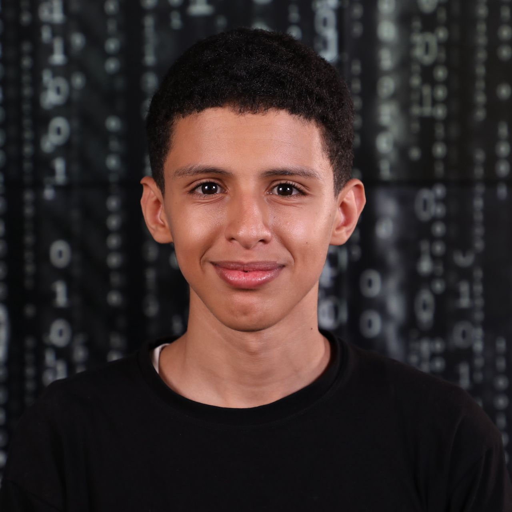

OUSSAMA HAMMOU MESSAOUD
I am a passionate and experienced software
developer with a strong background in building dynamic and efficient softwares.
I hold a degree in Computer Science from 1337 ben guerir (42 Network) and I have specialized in web development (html css javascript php) ,
mobile app development (java pythone), and more languages like C and C++